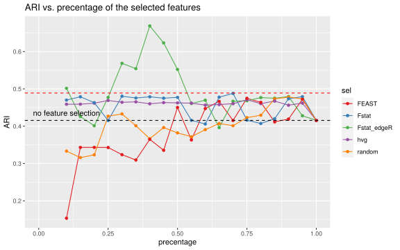
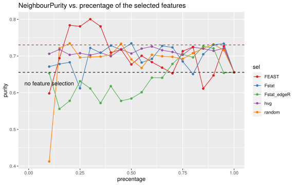

We selected highly variable genes (HVG) and use them for dimension reduction (DR). The DR result is shown in PCA colored by the annotated cell types, sample ids and conditions (control or stimulated).
First, we need to identify significant PCs in order to capture the majority of the variation between clusters or cell types. An elbow plot is drawn to show the percentage of explained variance by each PC using the top 50 PCs.
With the elbow plot, we can roughly see the explained variance does not change from PC10. Therefore, we decided to use 10 PCs that explain the majority of the variance of the high-dimension data.
We first perform initial clustering in both high and low resolution using HVG. High resolution is for calculating type scores; while low resolution is for calculating state scores.
Here, we calculated two type scores (F-statistics and entropy), one state scores (p values of DS analysis by edgeR) and random score drawed from uniform distribution ranging from 0 to 1. The following figure illustrates the relationship between different scores colored by HVG. We also added two published feature selection tools into comparison: FEAST which is also a clustering-based filter method scoring the genes by F-statistics, and DUBStepR that is based on the idea of cell-type-specific markers should be well correlated with each other.
We utilized the isOutlier function to identify genes whose type/state scores were outliers, using the median absolute deviation (MAD) as the criterion. For highly variable genes (HVG), we selected those with a biological variation greater than 0. Furthermore, DUBStepR has already furnished an optimal set of features. An ideal marker is expected to exhibit a high Fstat score but a low edgeR score, signifying a high type score yet a low state score. To ensure each method selected a sufficient number of genes, we set the nmads parameter to 1.
Code
rowData(sce)$Fstat_sel <-isOutlier(rowData(sce)$Fstat, type ="higher", nmads =1)rowData(sce)$edgeR_sel <-isOutlier(rowData(sce)$edgeR, type ="higher", nmads =1)rowData(sce)$Fstat_edgeR_sel <-isOutlier(rowData(sce)$Fstat_edgeR, type ="higher", nmads =0.1)rowData(sce)$hvg_sel <-rowData(sce)$bio >0rowData(sce)$FEAST_sel <-isOutlier(rowData(sce)$FEAST, type ="higher", nmads =1)rowData(sce)$DUBStepR_sel <-rowData(sce)$DUBStepR >0lst <-list(Fstat =rowData(sce)[rowData(sce)$Fstat_sel,"gene_id"], edgeR =rowData(sce)[rowData(sce)$edgeR_sel,"gene_id"],Fstat_edgeR =rowData(sce)[rowData(sce)$Fstat_edgeR_sel,"gene_id"],hvg =rowData(sce)[rowData(sce)$hvg_sel,"gene_id"],FEAST =rowData(sce)[rowData(sce)$FEAST_sel,"gene_id"],DUBStepR =rowData(sce)[rowData(sce)$DUBStepR_sel,"gene_id"])upset(fromList(lst),order.by ="freq",nsets =length(lst),set_size.show =TRUE,scale.sets ="identity")
Here, we extract genes with rank difference between Fstat type score and edgeR state score larger than 0, indicating a gene has relatively larger type score than state score. It is observed that even genes with every high F-statistics values but high edgeR value might still be excluded by Fstat_edgeR selection.
Code
sel <-rowData(sce)[rowData(sce)$Fstat_edgeR >0, ]ggplot(data.frame(sel), aes(x =log10(Fstat), y = edgeR, col = Fstat_edgeR)) +geom_point() +scale_colour_gradient2() +ylab("-log(p_val) in edgeR DS")
Determine the optimal size of features
To determine the optimal size of selected features, we tried different number of genes and evaluate its performance using ARI, mean silhouette score and neighbour purity between clusters. There are two dashed lines: the black dashed line indicates the evaluation value when no feature selection, i.e. using all features; the red dashed line shows the results by DUBStepR because it provides an optimal set of features and thus no need to vary the feature size.
Code
sel <-c("Fstat_edgeR", "random", "bio", "Fstat", "FEAST")n <-seq(0.1,1,0.05)params <-expand.grid(n = n, sel = sel)# Loop over each row of params and compute performanceres <-lapply(1:nrow(params), \(i) {set.seed(2023) x <- params$n[i] s <- params$sel[i] idx <-order(rowData(sce)[, s], decreasing =TRUE)[seq_len(round(nrow(sce)*x))] sel_val <-rep(FALSE, nrow(sce)) sel_val[idx] <-TRUE sce <-runPCA(sce, subset_row = sel_val) sce$cluster_re <-clusterCells(sce, use.dimred ="PCA") ari <-ARI(sce$cluster_re, sce$cluster_id) sil <-.sil_k(sce) pur <-.pur_k(sce)data.frame(ARI = ari, sil = sil, pur = pur, sel = s, n = x)})sta <-data.frame(do.call(rbind, res))#saveRDS(sta, "../data/case/sta.rds")
ggplot(df, aes(x = precentage, y = ARI, col = sel)) +geom_line(stat ="identity") +geom_point(stat ="identity") +xlim(c(0,1)) +geom_hline(yintercept = base_ari, linetype ="dashed", color ="black", size =0.5) +geom_hline(yintercept = dub_ari, linetype ="dashed", color ="red", size =0.5) +annotate("text", x =0.1, y = base_ari +0.02, label ="no feature selection", color ="black") +ggtitle("ARI vs. precentage of the selected features") +scale_color_brewer(palette ="Set1")
Warning: Using `size` aesthetic for lines was deprecated in ggplot2 3.4.0.
Please use `linewidth` instead.

Code
ggplot(df, aes(x = precentage, y = silhouette, col = sel)) +geom_line(stat ="identity") +geom_point(stat ="identity") +geom_hline(yintercept = base_sil, linetype ="dashed", color ="black", size =0.5) +geom_hline(yintercept = dub_sil, linetype ="dashed", color ="red", size =0.5) +annotate("text", x =0.1, y = base_sil +0.01, label ="no feature selection", color ="black") +xlim(c(0,1)) +ggtitle("silhouette vs. precentage of the selected features") +scale_color_brewer(palette ="Set1")
Code
ggplot(df, aes(x = precentage, y = purity, col = sel)) +geom_line(stat ="identity") +geom_point(stat ="identity") +geom_hline(yintercept = base_pur, linetype ="dashed", color ="black", size =0.5) +geom_hline(yintercept = dub_pur, linetype ="dashed", color ="red", size =0.5) +annotate("text", x =0.1, y = base_pur -0.03, label ="no feature selection", color ="black") +xlim(c(0,1)) +ggtitle("NeighbourPurity vs. precentage of the selected features") +scale_color_brewer(palette ="Set1")

Feature selection and reprosessing
Feature selection step
The above evaluation statistics results suggested that different selection methods have their own specific optimal size. Now we simply selected top 40% genes based on their scores (except for hvg and DUBStepR), which requires further adaption of the feature sizes.
PCA plots on selected features indicated that all other methods are affected by the strong state effect in the data, with two conditions clearly separated. However, our Fstat_edgeR gives two blobs with two conditions are well mixed.
Since the number of clusters between clustering-based DA and DS are the same, we are able to compare the results of DA_edgeR, DA_limma with the aggregated results of DS_edgeR in each cluster.
ggplot(df, aes(x = cluster_re, y = logFC, shape = das, col = color)) +facet_wrap(~ sel, nrow =2, scales ="free") +geom_quasirandom() +scale_colour_identity() +stat_summary(fun ="mean", geom ="point", shape =8, color ="black") +geom_hline(yintercept =1, linetype ="dashed", color ="gray") +geom_hline(yintercept =-1, linetype ="dashed", color ="gray")
Clustering-based DA vs Clustering-free DA
In the miloR package, the annotateNhood function can be used to annotate each neighborhood with a cluster ID. This is achieved by calculating the maximum proportion of clusters present in that neighborhood.
The beeswarm plots are then generated to compare the mean logFC or p-val values over neighborhoods in each cluster with the clustering-based results. These plots provide a visual comparison between the clustering-based results and the mean logFC or p-val values for each neighborhood within the respective clusters.
Code
milos <-lapply(names(sces), \(i){ x <- sces[[i]] cd <-data.frame(colData(x)) df <-distinct(cd[c("sample_id", "group_id")])rownames(df) <- df$sample_id#x <- Milo(x) y <-makeNhoods(buildGraph(Milo(x), d =ncol(reducedDim(x, "PCA")))) y <-countCells(y, "sample_id", cd) y <-calcNhoodDistance(y, d =ncol(reducedDim(x, "PCA"))) da <-testNhoods(y, ~ group_id, df) res <-annotateNhoods(y, da.res = da, coldata_col ="cluster_re")data.frame(res, sel = i)})df1 <-do.call(rbind, milos)df1 <- df1 %>%mutate(color =case_when( logFC >1~"pink", logFC <-1~"lightblue",TRUE~"gray" ))df2 <- das[das$clustering ==TRUE& das$DADS =="DA",]ggplot(df1, aes(x = cluster_re, y = logFC, col = color)) +facet_wrap(~ sel, nrow =2, scales ="free") +geom_quasirandom() +scale_colour_identity() +stat_summary(fun ="mean", geom ="point", shape =8, col ="black") +geom_hline(yintercept =1, linetype ="dashed", color ="gray") +geom_hline(yintercept =-1, linetype ="dashed", color ="gray") +geom_point(data = df2, mapping =aes(x = cluster_re, y = logFC, col ="black", shape = das))
Source Code
---title: "Case study on Kang18 scRNA-seq dataset"format: html: toc: true code-fold: true code-tools: true toc_float: true---## Dependencies ```{r warning=FALSE}#| label: load-libssuppressPackageStartupMessages({library(scran)library(scater)library(patchwork)library(ExperimentHub)library(limma)library(leiden)library(igraph)library(harmony)source("utils.R")library(dplyr)library(edgeR)library(scuttle)library(MLVSBM)library(GGally)library(miloR)library(miloDE)#library(lemur)library(stringr)library(UpSetR)library(pathviewr)library(cluster)library(bluster)library(viridis)library(leiden)library(ggbeeswarm)library(ggridges)library(FEAST)library(DUBStepR)})set.seed(2023)```## Load dataLoad filtered data (after QC and normalization) and subsample 3000 genes and 5000 cells for analysis. ```{r fold}#| label: load-data# load preprocessed datasce <-readRDS("../data/case/Kang18.rds")gid <-sample(seq_len(nrow(sce)), 3000)cid <-sample(seq_len(ncol(sce)), 5000)sce <- sce[gid, cid]```## Preprocessing with HVGWe selected highly variable genes (HVG) and use them for dimension reduction (DR). The DR result is shown in PCA colored by the annotated cell types, sample ids and conditions (control or stimulated). First, we need to identify significant PCs in order to capture the majority of the variation between clusters or cell types. An elbow plot is drawn to show the percentage of explained variance by each PC using the top 50 PCs. ```{r fold}#| label: Preprocessing# widely used feature selection: HVGtbl <-modelGeneVar(sce, block = sce$sample_id)rowData(sce)$hvg <- hvg <- tbl$bio >0rowData(sce)$bio <- tbl$bio sce <-runPCA(sce, subset_row = hvg, ncomponent =50)pcs <-attr(reducedDim(sce, "PCA"), "percentVar")pv <-data.frame(row.names =NULL,PC =seq_len(length(pcs)),percentVar = pcs)ggplot(pv, aes(x = PC, y = percentVar, label = PC)) +geom_text(size =3, color ="blue")```With the elbow plot, we can roughly see the explained variance does not change from PC10. Therefore, we decided to use 10 PCs that explain the majority of the variance of the high-dimension data. ```{r harmony, message=FALSE, warning=FALSE}sce <-runPCA(sce, subset_row = hvg, ncomponents =10)# integrationpca <-HarmonyMatrix(data_mat =assay(sce, "counts"),meta_data =colData(sce),vars_use ="sample_id",npcs =10)reducedDim(sce, "PCA") <- pca```::: {.panel-tabset}### PCA - cell type```{r PCA - cell type}plotPCA(sce, colour_by ="cluster_id") +coord_equal()```### PCA - sample_id```{r PCA - sample_id}plotPCA(sce, colour_by ="sample_id") +coord_equal()```### PCA - group_id```{r PCA - group_id}plotPCA(sce, colour_by ="group_id") +coord_equal()```:::## Initial clustering: high and low resolutionWe first perform initial clustering in both high and low resolution using HVG. High resolution is for calculating type scores; while low resolution is for calculating state scores. ```{r fig.height=8, fig.width=15, warning=FALSE}rsl <-seq(0.1, 5, by =0.2)g <-buildSNNGraph(sce, use.dimred ="PCA")# reso <- lapply(rsl, \(i) {# sce$cluster_hi <- cluster_louvain(g, resolution = i)$membership# sce$cluster_hi <- factor(sce$cluster_hi,sort(unique(sce$cluster_hi)))# sce$cluster_lo <- sce$cluster_hi# Fstat <- .Fstat(sce)# edgeR <- .edgeR(sce)# Fstat_edgeR <- rank(Fstat) - rank(edgeR)# data.frame(resolution = i, Fstat = Fstat, edgeR = edgeR, Fstat_edgeR)# })# res_df <- data.frame(do.call(rbind, reso))# saveRDS(reso, "../data/case/reso.rds")reso <-readRDS("../data/case/reso.rds")res_df <-do.call(rbind, reso)```::: {.panel-tabset}### Fstat```{r Fstat, fig.height=8, fig.width=15, warning=FALSE}p1 <-ggplot(res_df, aes(x = Fstat, y =factor(resolution), fill =factor(resolution))) +geom_density_ridges() +ylab("clustering resolution") +scale_fill_viridis_d() +scale_x_log10() +ggtitle("Fstat vs. clustering resolution") +theme(legend.position ="none") p2 <-ggplot(res_df, aes(x =factor(resolution), y = Fstat, fill =factor(resolution))) +geom_violin(alpha =0.4) +scale_y_log10() +geom_boxplot(width =0.07) +xlab("resolution")p1 + p2 +plot_layout(ncol =2)```### edgeR```{r edgeR, fig.height=8, fig.width=15, warning=FALSE}res_df <- res_df[res_df$edgeR !=0, ]p3 <-ggplot(na.omit(res_df), aes(x = edgeR, y =factor(resolution), fill =factor(resolution))) +geom_density_ridges() +ylab("clustering resolution") +scale_fill_viridis_d() +scale_x_log10() +ggtitle("edgeR -log(p_val) vs. clustering resolution") +theme(legend.position ="none")p4 <-ggplot(res_df, aes(x =factor(resolution), y = edgeR, fill =factor(resolution))) +geom_violin(alpha =0.4) +scale_y_log10() +geom_boxplot(width =0.07) +xlab("resolution") +ylab("edgeR -log(p_val)")p3 + p4 +plot_layout(ncol =2)```### Fstat_edgeR```{r Fstat_edgeR, fig.height=8, fig.width=15, warning=FALSE}res_df <- res_df[res_df$Fstat_edgeR !=0, ]p5 <-ggplot(na.omit(res_df), aes(x = Fstat_edgeR, y =factor(resolution), fill =factor(resolution))) +geom_density_ridges() +ylab("clustering resolution") +scale_fill_viridis_d() +scale_x_log10() +ggtitle("Fstat_edgeR vs. clustering resolution") +theme(legend.position ="none")p6 <-ggplot(res_df, aes(x =factor(resolution), y = Fstat_edgeR, fill =factor(resolution))) +geom_violin(alpha =0.4) +scale_y_log10() +geom_boxplot(width =0.07) +xlab("resolution") +ylab("Fstat_edgeR")p5 + p6 +plot_layout(ncol =2)```:::```{r}#| label: Initial clusteringset.seed(2023)g <-buildSNNGraph(sce, use.dimred ="PCA")sce$cluster_hi <-cluster_louvain(g, resolution =0.6)$membershipsce$cluster_lo <-cluster_louvain(g, resolution =0.6)$membershipsce$cluster_hi <-factor(sce$cluster_hi, sort(unique(sce$cluster_hi)))sce$cluster_lo <-factor(sce$cluster_lo, sort(unique(sce$cluster_lo)))```::: {.panel-tabset}### PCA - hvg, high resolution```{r}#| label: PCA highplotPCA(sce, colour_by ="cluster_hi") +coord_equal()```### PCA - hvg, low resolution```{r}#| label: PCA lowplotPCA(sce, colour_by ="cluster_lo") +coord_equal()```:::## Feature scoringHere, we calculated two type scores (F-statistics and entropy), one state scores (p values of DS analysis by edgeR) and random score drawed from uniform distribution ranging from 0 to 1. The following figure illustrates the relationship between different scores colored by HVG. We also added two published feature selection tools into comparison: *FEAST* which is also a clustering-based filter method scoring the genes by F-statistics, and *DUBStepR* that is based on the idea of cell-type-specific markers should be well correlated with each other.```{r warning=FALSE, message=FALSE, results=FALSE, fig.height=6, fig.width=9}#| label: Score featuresrowData(sce)$Fstat <-.Fstat(sce)rowData(sce)$edgeR <-.edgeR(sce)rowData(sce)$random <-runif(nrow(sce))rowData(sce)$Fstat_edgeR <-rank(rowData(sce)$Fstat) -rank(rowData(sce)$edgeR)rowData(sce)$FEAST <-.FEAST(sce)rowData(sce)$DUBStepR <-.DUBStepR(sce)df <-data.frame(rowData(sce)) %>%mutate(Fstat =log10(Fstat),edgeR =log10(edgeR))ggpairs(df, columns =6:11, ggplot2::aes(colour = hvg, alpha =0.4),upper ="blank",legend =1)```### Further exploration of different scoresWe utilized the `isOutlier` function to identify genes whose type/state scores were outliers, using the median absolute deviation (MAD) as the criterion. For highly variable genes (HVG), we selected those with a biological variation greater than 0. Furthermore, **DUBStepR** has already furnished an optimal set of features. An ideal marker is expected to exhibit a high Fstat score but a low edgeR score, signifying a high type score yet a low state score. To ensure each method selected a sufficient number of genes, we set the `nmads` parameter to 1.```{r}rowData(sce)$Fstat_sel <-isOutlier(rowData(sce)$Fstat, type ="higher", nmads =1)rowData(sce)$edgeR_sel <-isOutlier(rowData(sce)$edgeR, type ="higher", nmads =1)rowData(sce)$Fstat_edgeR_sel <-isOutlier(rowData(sce)$Fstat_edgeR, type ="higher", nmads =0.1)rowData(sce)$hvg_sel <-rowData(sce)$bio >0rowData(sce)$FEAST_sel <-isOutlier(rowData(sce)$FEAST, type ="higher", nmads =1)rowData(sce)$DUBStepR_sel <-rowData(sce)$DUBStepR >0lst <-list(Fstat =rowData(sce)[rowData(sce)$Fstat_sel,"gene_id"], edgeR =rowData(sce)[rowData(sce)$edgeR_sel,"gene_id"],Fstat_edgeR =rowData(sce)[rowData(sce)$Fstat_edgeR_sel,"gene_id"],hvg =rowData(sce)[rowData(sce)$hvg_sel,"gene_id"],FEAST =rowData(sce)[rowData(sce)$FEAST_sel,"gene_id"],DUBStepR =rowData(sce)[rowData(sce)$DUBStepR_sel,"gene_id"])upset(fromList(lst),order.by ="freq",nsets =length(lst),set_size.show =TRUE,scale.sets ="identity")```Here, we extract genes with rank difference between Fstat type score and edgeR state score larger than 0, indicating a gene has relatively larger type score than state score. It is observed that even genes with every high F-statistics values but high edgeR value might still be excluded by *Fstat_edgeR* selection. ```{r}sel <-rowData(sce)[rowData(sce)$Fstat_edgeR >0, ]ggplot(data.frame(sel), aes(x =log10(Fstat), y = edgeR, col = Fstat_edgeR)) +geom_point() +scale_colour_gradient2() +ylab("-log(p_val) in edgeR DS")```### Determine the optimal size of featuresTo determine the optimal size of selected features, we tried different number of genes and evaluate its performance using ARI, mean silhouette score and neighbour purity between clusters. There are two dashed lines: the black dashed line indicates the evaluation value when no feature selection, i.e. using all features; the red dashed line shows the results by **DUBStepR** because it provides an optimal set of features and thus no need to vary the feature size. ```{r warning=FALSE, results='hide'}#| label: Evaluating number of selected featuressel <-c("Fstat_edgeR", "random", "bio", "Fstat", "FEAST")n <-seq(0.1,1,0.05)params <-expand.grid(n = n, sel = sel)# Loop over each row of params and compute performanceres <-lapply(1:nrow(params), \(i) {set.seed(2023) x <- params$n[i] s <- params$sel[i] idx <-order(rowData(sce)[, s], decreasing =TRUE)[seq_len(round(nrow(sce)*x))] sel_val <-rep(FALSE, nrow(sce)) sel_val[idx] <-TRUE sce <-runPCA(sce, subset_row = sel_val) sce$cluster_re <-clusterCells(sce, use.dimred ="PCA") ari <-ARI(sce$cluster_re, sce$cluster_id) sil <-.sil_k(sce) pur <-.pur_k(sce)data.frame(ARI = ari, sil = sil, pur = pur, sel = s, n = x)})sta <-data.frame(do.call(rbind, res))#saveRDS(sta, "../data/case/sta.rds")``````{r fig.width=8}#sta <- readRDS("/Volumes/jiayiwang/type-state/data/case/sta.rds")df <-data.frame(ARI = sta$ARI,precentage = n,silhouette = sta$sil,purity = sta$pur,number =nrow(sce)*n,sel = sta$sel) %>%mutate(label =paste0(number, ", ", round(ARI, digits =2))) %>%mutate(sel =case_when(sel =="bio"~"hvg",TRUE~ sel))# baselineset.seed(2023)all <-rep(TRUE, nrow(sce))sce1 <-runPCA(sce, subset_row = all)sce1$cluster_re <-clusterCells(sce1, use.dimred ="PCA")base_ari <-ARI(sce1$cluster_re, sce1$cluster_id)base_sil <-.sil_k(sce1)base_pur <-.pur_k(sce1)# DUBStepRsce2 <-runPCA(sce, subset_row =rowData(sce)$DUBStepR_sel)sce2$cluster_re <-clusterCells(sce2, use.dimred ="PCA")dub_ari <-ARI(sce2$cluster_re, sce2$cluster_id)dub_sil <-.sil_k(sce2)dub_pur <-.pur_k(sce2)```::: {.panel-tabset}### ARI```{r , fig.width=8}ggplot(df, aes(x = precentage, y = ARI, col = sel)) +geom_line(stat ="identity") +geom_point(stat ="identity") +xlim(c(0,1)) +geom_hline(yintercept = base_ari, linetype ="dashed", color ="black", size =0.5) +geom_hline(yintercept = dub_ari, linetype ="dashed", color ="red", size =0.5) +annotate("text", x =0.1, y = base_ari +0.02, label ="no feature selection", color ="black") +ggtitle("ARI vs. precentage of the selected features") +scale_color_brewer(palette ="Set1")```### Silhouette Score```{r, fig.width=8}ggplot(df, aes(x = precentage, y = silhouette, col = sel)) +geom_line(stat ="identity") +geom_point(stat ="identity") +geom_hline(yintercept = base_sil, linetype ="dashed", color ="black", size =0.5) +geom_hline(yintercept = dub_sil, linetype ="dashed", color ="red", size =0.5) +annotate("text", x =0.1, y = base_sil +0.01, label ="no feature selection", color ="black") +xlim(c(0,1)) +ggtitle("silhouette vs. precentage of the selected features") +scale_color_brewer(palette ="Set1")```### Neighbourhood purity```{r , fig.width=8}ggplot(df, aes(x = precentage, y = purity, col = sel)) +geom_line(stat ="identity") +geom_point(stat ="identity") +geom_hline(yintercept = base_pur, linetype ="dashed", color ="black", size =0.5) +geom_hline(yintercept = dub_pur, linetype ="dashed", color ="red", size =0.5) +annotate("text", x =0.1, y = base_pur -0.03, label ="no feature selection", color ="black") +xlim(c(0,1)) +ggtitle("NeighbourPurity vs. precentage of the selected features") +scale_color_brewer(palette ="Set1")```:::## Feature selection and reprosessing ### Feature selection stepThe above evaluation statistics results suggested that different selection methods have their own specific optimal size. Now we simply selected top 40% genes based on their scores (except for hvg and **DUBStepR**), which requires further adaption of the feature sizes. ```{r}#| label: Feature selection and reprocessfs <- \(sce, n, sel, res) { idx <-order(rowData(sce)[,sel], decreasing =TRUE)[seq_len(round(nrow(sce)*n))] sel_val <-rep(FALSE, nrow(sce)) sel_val[idx] <-TRUErowData(sce)[, res] <- sel_valreturn(sce)}sco <-c("Fstat_edgeR", "Fstat", "random", "FEAST")for (s in sco) { r <-paste0(s,"_sel") sce <-fs(sce, n =0.45, sel = s, res = r)}sel <-c("Fstat_edgeR_sel", "Fstat_sel", "random_sel", "hvg", "DUBStepR_sel", "FEAST_sel")sces <-lapply(sel, \(s) { sce <-runPCA(sce, subset_row =rowData(sce)[,s]) sce$cluster_re <-clusterCells(sce, use.dimred ="PCA")return(sce)}) names(sces) <-c("Fstat_edgeR", "Fstat", "random", "hvg", "DUBStepR", "FEAST")lst <-list(Fstat =rowData(sce)[rowData(sce)$Fstat_sel,"gene_id"], edgeR =rowData(sce)[rowData(sce)$edgeR_sel,"gene_id"],Fstat_edgeR =rowData(sce)[rowData(sce)$Fstat_edgeR_sel,"gene_id"],hvg =rowData(sce)[rowData(sce)$hvg_sel,"gene_id"],FEAST =rowData(sce)[rowData(sce)$FEAST_sel,"gene_id"],DUBStepR =rowData(sce)[rowData(sce)$DUBStepR_sel,"gene_id"])upset(fromList(lst),order.by ="freq",nsets =length(lst),set_size.show =TRUE,scale.sets ="identity")```### PCA and UMAP on reprocessed dataPCA plots on selected features indicated that all other methods are affected by the strong state effect in the data, with two conditions clearly separated. However, our Fstat_edgeR gives two blobs with two conditions are well mixed. ::: {.panel-tabset}#### new PCA, cluster_re```{r pk, warning=FALSE, fig.height=10, fig.width=8}pk <-lapply(names(sces), \(x) plotPCA(sces[[x]], colour_by ="cluster_re") +ggtitle(x) +theme(legend.position="none")) |>wrap_plots(ncol =2) +plot_layout(guides ="collect") pk```#### new PCA, condition```{r pg, warning=FALSE, fig.height=10, fig.width=8}pg <-lapply(names(sces), \(x) plotPCA(sces[[x]], colour_by ="group_id") +ggtitle(x)) |>wrap_plots(ncol =2) +plot_layout(guides ="collect")pg```#### new PCA, cell type```{r pc, warning=FALSE, fig.height=10, fig.width=8}pc <-lapply(names(sces), \(x) plotPCA(sces[[x]], colour_by ="cluster_id") +ggtitle(x)) |>wrap_plots(ncol =2) +plot_layout(guides ="collect")pc```:::### Abundance plot ::: {.panel-tabset}#### Proportion of cell types in each cluster_re```{r abundance plot1, fig.height=10, fig.width=12}#| label: Abundancelapply(names(sces), \(x){ cd <-data.frame(colData(sces[[x]]))ggplot(cd) +aes(x = cluster_re, fill = cluster_id) +geom_bar(position ="fill") +xlab("Cluster after reprocessed") +scale_fill_brewer(palette ="Paired") +ggtitle(x)}) |>wrap_plots(nrow =2) +plot_layout(guides ="collect")```#### Proportion of cluster_re in each cell type```{r abundance plot2, fig.height=10, fig.width=10, warning=FALSE}lapply(names(sces), \(x){ cd <-data.frame(colData(sces[[x]]))ggplot(cd) +aes(x = cluster_id, fill = cluster_re) +geom_bar(position ="fill") +xlab("Cell Type") +scale_fill_brewer(palette ="Paired") +ggtitle(x) +theme(axis.text.x =element_text(angle =45, vjust =1, hjust=1))}) |>wrap_plots(nrow =2) +plot_layout(guides ="collect")```:::## Differential analysis### DA```{r DA, message=FALSE, warning=FALSE}# edgeRdal <-lapply(names(sces), \(x) { e <-data.frame(.DA_edgeR(sces[[x]])[,c("p_val", "p_adj", "cluster_re", "logFC")], sel = x, das ="DA_edgeR", DADS ="DA", clustering =TRUE) l <-data.frame(.DA_limma(sces[[x]])[,c("p_val", "p_adj", "cluster_re", "logFC")], sel = x, das ="DA_limma", DADS ="DA", clustering =TRUE) m <-data.frame(.DA_milo(sces[[x]])[,c("p_val", "p_adj", "Nhood", "logFC")], sel = x, das ="DA_milo", DADS ="DA", clustering =FALSE) %>%rename("cluster_re"="Nhood")do.call(rbind, list(e,l,m))})da <-do.call(rbind, dal)```### DS```{r DS, message=FALSE, warning=FALSE}dsl <-lapply(names(sces), \(x) { e <-data.frame(.DS_edgeR(sces[[x]])[,c("p_val", "p_adj", "cluster_re", "gene", "logFC")], sel = x, das ="DS_edgeR", DADS ="DS", clustering =TRUE) #l <- data.frame(.DS_lemur(sces[[x]])[,c("p_val", "p_adj", "cluster_re")], # sel = x, das = "DS_lemur", DADS = "DS", clustering = FALSE) m <-data.frame(.DS_miloDE(sces[[x]])[,c("p_val", "p_adj", "Nhood", "gene", "logFC")], sel = x, das ="DS_miloDE", DADS ="DS", clustering =FALSE) %>%rename("cluster_re"="Nhood")do.call(rbind, list(e,m))})ds <-do.call(rbind, dsl)das <-do.call(rbind, list(ds[, -which(names(ds) =="gene")], da))```### Comparison between DA and DSThe DA and DS p-value distribution with different feature selection methods.#### Distribution of p values and logFC::: {.panel-tabset} #### By selection```{r sel, message=FALSE, warning=FALSE}ggplot(das, aes(p_val, after_stat(ndensity), col = das, linetype = DADS)) +geom_density(key_glyph ="smooth") +facet_wrap(~ sel, ncol =2, scales ="free")ggplot(das, aes(logFC, after_stat(ndensity), col = das, linetype = DADS)) +geom_density(key_glyph ="smooth") +facet_wrap(~ sel, ncol =2, scales ="free")```#### By DAS```{r DAS, message=FALSE, warning=FALSE}ggplot(das, aes(p_val, after_stat(ndensity), col = sel)) +geom_density(key_glyph ="smooth") +facet_wrap(~ das, ncol =2, scales ="free")ggplot(das, aes(logFC, after_stat(ndensity), col = sel)) +geom_density(key_glyph ="smooth") +facet_wrap(~ das, ncol =2, scales ="free")```:::#### Clustering-based DA vs Clustering-based DSSince the number of clusters between clustering-based DA and DS are the same, we are able to compare the results of *DA_edgeR*, *DA_limma* with the aggregated results of *DS_edgeR* in each cluster. ```{r DADS, fig.height=8, fig.width=12}df <- das[das$clustering ==TRUE,]df <- df %>%mutate(color =case_when( logFC >1~"pink", logFC <-1~"lightblue", DADS =="DA"~"black",TRUE~"gray" ))ggplot(df, aes(x = cluster_re, y = p_val, col = DADS, shape = das)) +facet_wrap(~ sel, nrow =2, scales ="free") +geom_quasirandom() +scale_color_brewer(palette ="Pastel1") +stat_summary(fun ="mean", geom ="point", shape =8, col ="black") +geom_hline(yintercept =0.05, linetype ="dashed", color ="gray")ggplot(df, aes(x = cluster_re, y = logFC, shape = das, col = color)) +facet_wrap(~ sel, nrow =2, scales ="free") +geom_quasirandom() +scale_colour_identity() +stat_summary(fun ="mean", geom ="point", shape =8, color ="black") +geom_hline(yintercept =1, linetype ="dashed", color ="gray") +geom_hline(yintercept =-1, linetype ="dashed", color ="gray")```#### Clustering-based DA vs Clustering-free DAIn the `miloR` package, the `annotateNhood` function can be used to annotate each neighborhood with a cluster ID. This is achieved by calculating the maximum proportion of clusters present in that neighborhood.The beeswarm plots are then generated to compare the mean logFC or p-val values over neighborhoods in each cluster with the clustering-based results. These plots provide a visual comparison between the clustering-based results and the mean logFC or p-val values for each neighborhood within the respective clusters.```{r milo comparsion, fig.height=8, fig.width=12, warning=FALSE, message=FALSE}milos <-lapply(names(sces), \(i){ x <- sces[[i]] cd <-data.frame(colData(x)) df <-distinct(cd[c("sample_id", "group_id")])rownames(df) <- df$sample_id#x <- Milo(x) y <-makeNhoods(buildGraph(Milo(x), d =ncol(reducedDim(x, "PCA")))) y <-countCells(y, "sample_id", cd) y <-calcNhoodDistance(y, d =ncol(reducedDim(x, "PCA"))) da <-testNhoods(y, ~ group_id, df) res <-annotateNhoods(y, da.res = da, coldata_col ="cluster_re")data.frame(res, sel = i)})df1 <-do.call(rbind, milos)df1 <- df1 %>%mutate(color =case_when( logFC >1~"pink", logFC <-1~"lightblue",TRUE~"gray" ))df2 <- das[das$clustering ==TRUE& das$DADS =="DA",]ggplot(df1, aes(x = cluster_re, y = logFC, col = color)) +facet_wrap(~ sel, nrow =2, scales ="free") +geom_quasirandom() +scale_colour_identity() +stat_summary(fun ="mean", geom ="point", shape =8, col ="black") +geom_hline(yintercept =1, linetype ="dashed", color ="gray") +geom_hline(yintercept =-1, linetype ="dashed", color ="gray") +geom_point(data = df2, mapping =aes(x = cluster_re, y = logFC, col ="black", shape = das))```